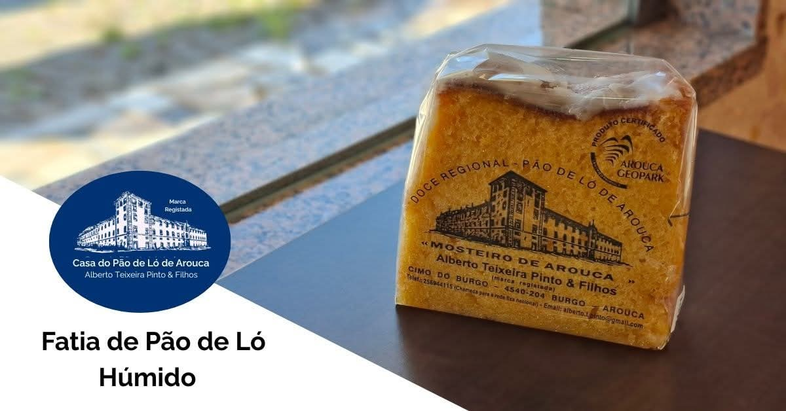
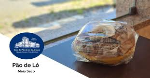
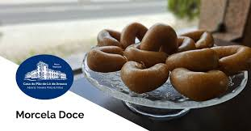
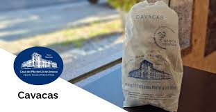
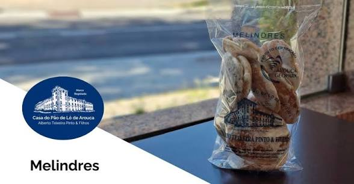

A Casa do Pão de Ló de Arouca de Alberto Teixeira Pinto & Filhos é a guardiã de um segredo com quase dois séculos. Originária do Mosteiro de Arouca, a nossa receita sobreviveu à história, mantendo-se fiel aos métodos de 1840.
O batido manual enérgico e a cozedura em forno a lenha conferem aos nossos doces uma alma impossível de replicar industrialmente. Esta dedicação artesanal garante a textura única que define a identidade gastronómica da nossa vila.
Hoje, continuamos a honrar o legado da família, assegurando que cada produto transporta consigo a mestria artesanal e a nobreza do sabor original.

Ouro em forma de doce. Fatias generosas banhadas em calda de açúcar com um interior cremoso e húmido. Uma experiência inesquecível.

O formato clássico "meio seco" cozido à moda antiga. Disponível em tamanhos padrão ou por encomenda personalizada para festas e eventos.

Uma fusão nobre de amêndoa, pão, manteiga, açúcar e canela. Receita secular vinda diretamente das freiras cistercienses do Mosteiro de Arouca.

Interior leve e poroso com uma cobertura crocante de açúcar. Um clássico da nossa doçaria regional feito com rigor e tradição.

Pequenos suaves e delicados bolinhos de ovo. O acompanhamento perfeito para um momento de pausa com o sabor autêntico de antigamente.
"O Pão de Ló húmido é uma experiência religiosa. Não há igual em todo o país, a calda de açúcar é perfeita!"
— Avaliação Google"Entrar aqui é viajar no tempo. O aroma do forno a lenha e a simpatia da família completam o sabor divinal."
— Visit Arouca"Qualidade constante há décadas. É paragem obrigatória sempre que visito o Geopark Arouca."
— Cliente Frequente